Life Sciences Semantic Web
Máster Bioinformática UM (2014-2015)
Mikel Egaña Aranguren
http://mikeleganaaranguren.com / mikel.egana.aranguren@gmail.com
http://mikeleganaaranguren.wordpress.com/teaching/

Life Sciences Semantic Web
Life Sciences Semantic Web

Pila tecnologías Web Semántica
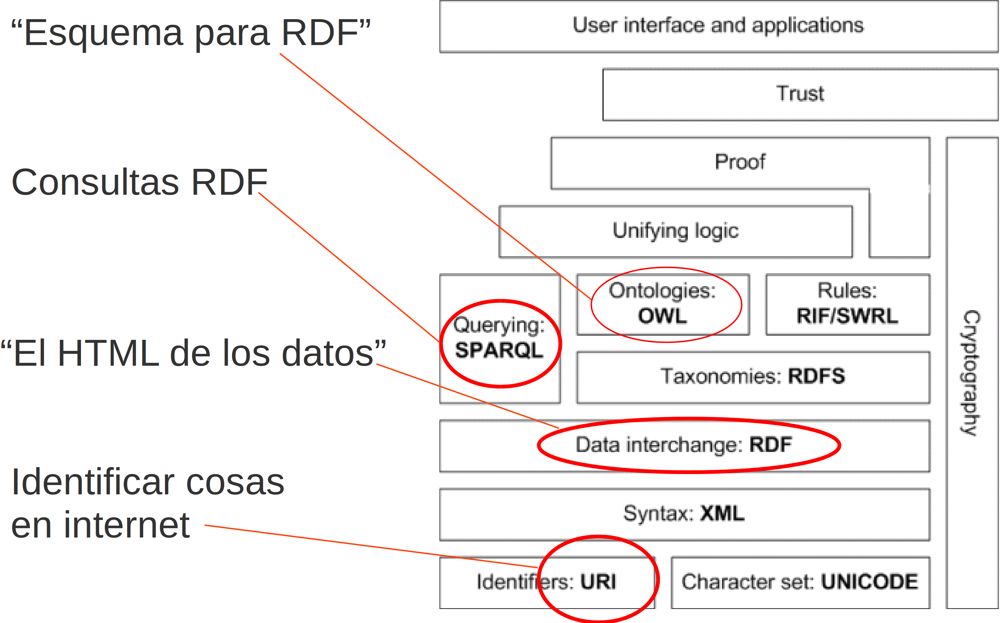
OWL (Web Ontology Language)
OWL
OWL es un estándar oficial del W3C para crear ontologías en la web con un semántica precisa y formal
OWL
OWL se basa en Lógica Descriptiva (DL)
Representación computacional de un dominio de conocimiento:
- Razonamiento automático: inferir conocimiento "nuevo" (*), consultas, consistencia, clasificar entidades contra la ontología, ...
- Integrar conocimiento disperso
Sintaxis OWL
Para ordenadores: RDF/XML, OWL/XML, ...
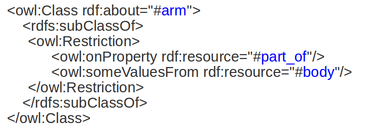Para humanos: Manchester OWL Syntax, functional, ...
Semántica OWL
Una ontología OWL esta compuesta de:
- Entidades: las entidades del dominio de conocimiento, identificadas con URIs, introducidas por el desarrollador ("proteina", "participa_en", ...)
- Axiomas: relacionan las entidades mediante el vocabulario lógico que ofrece OWL
Una ontología puede importar otra (owl:import) y hacer referencia a sus entidades mediante axiomas
Entidades OWL
- Individuos
- Clases
- Propiedades
- Objeto
- Anotación
- Datos
Individuos

Propiedades
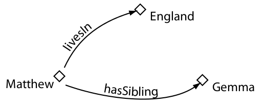
Clases

Semántica OWL
Una ontología OWL formada por individuos y clases es una "Base de Conocimiento" (KB) formada por:
- TBox (Terminological Box): clases (~ "esquema")
- Abox (Assertional Box): individuos (~ "datos")
Clases
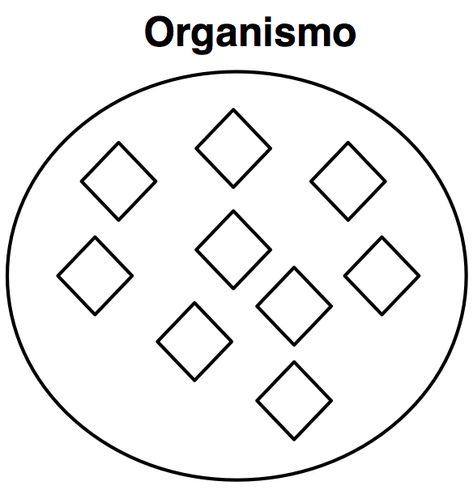
Clase subclase
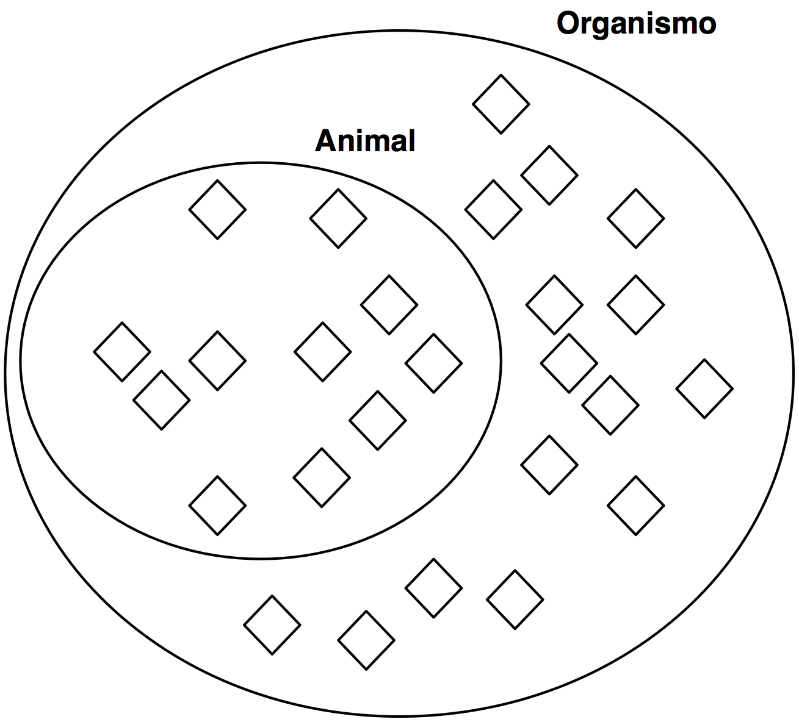
Clases equivalentes
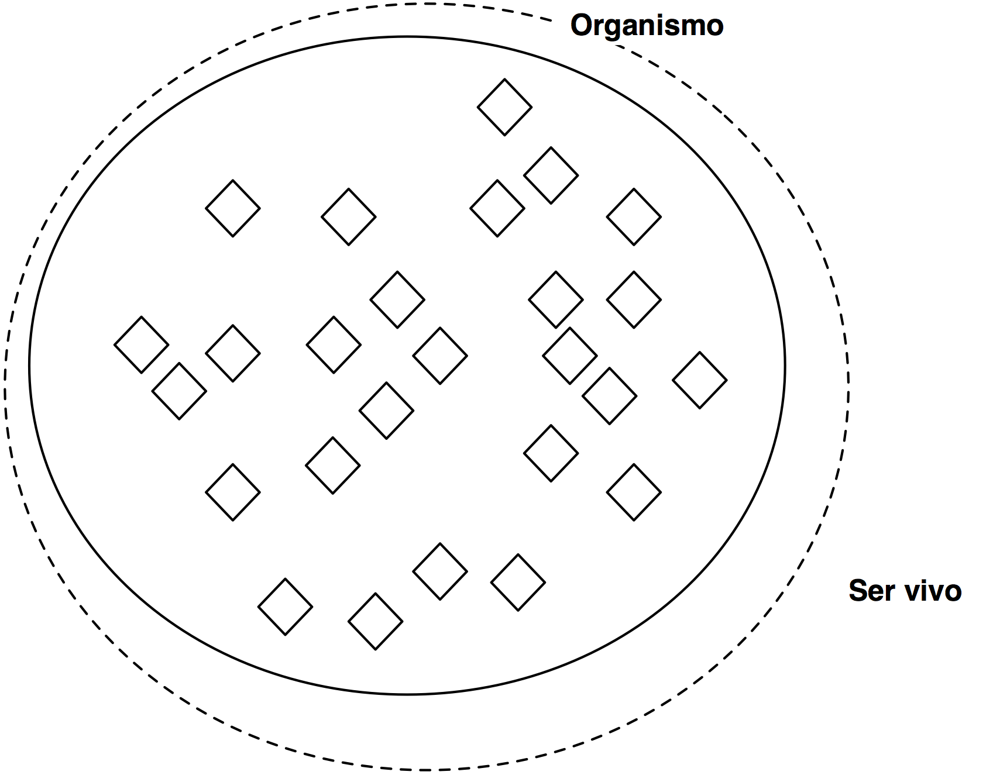
Jerarquía de clases (Taxonomía)
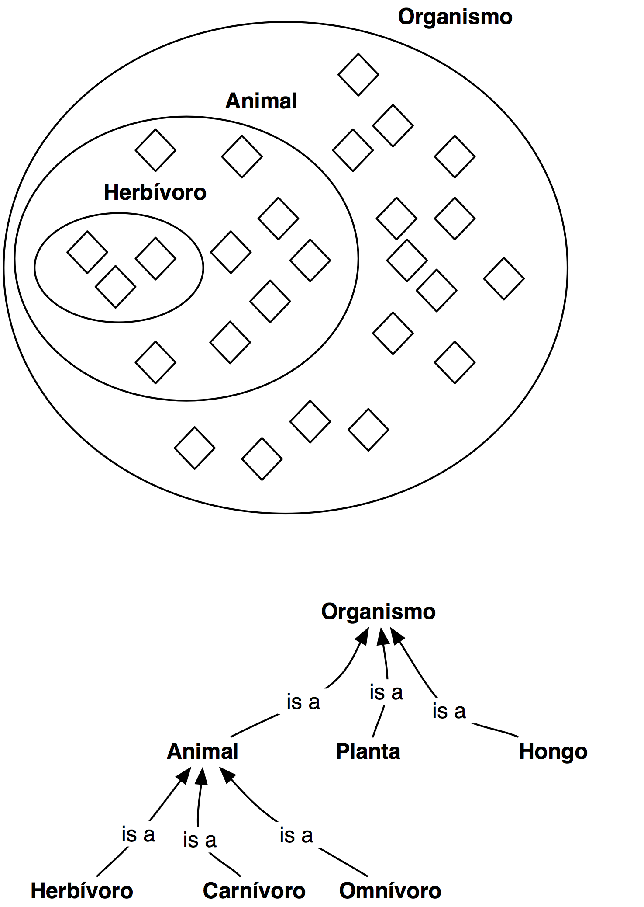
Condiciones necesarias
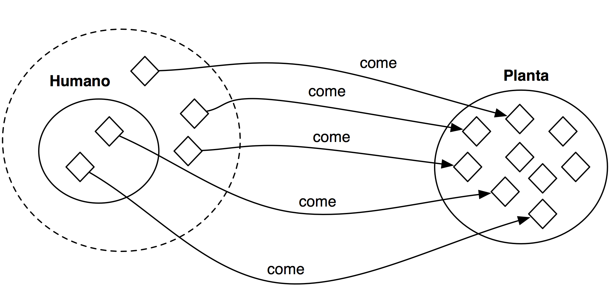
Condiciones necesarias y suficientes
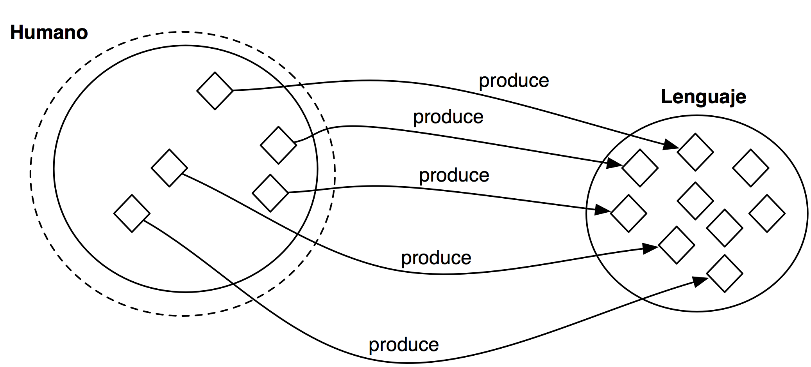
Restricción existencial (some)
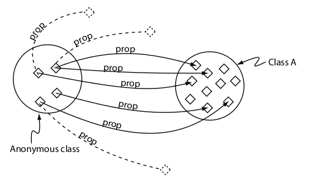
Restricción universal (only)

Restricción a un individuo (value)

Restricciones cardinales
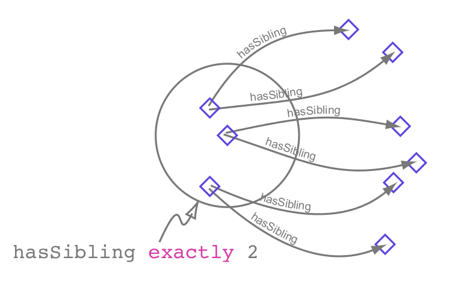
(+ QCR!) Manchester tutorial
Más axiomas para clases
disjointFrom
booleanos: not, or, and
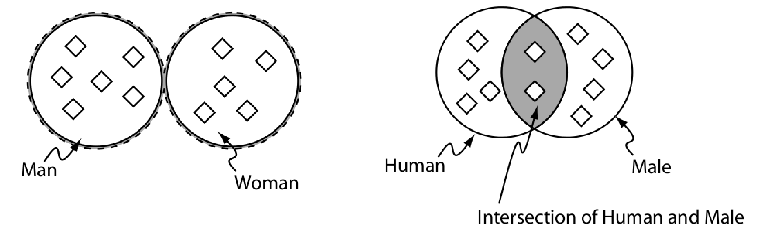
Expresiones complejas

Propiedades OWL
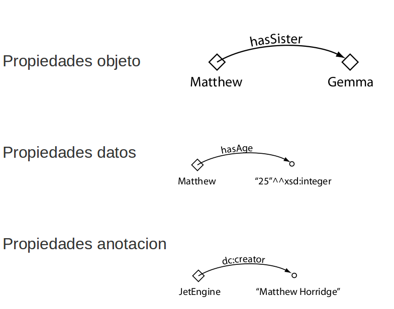
Jerarquía propiedades
Jerarquía propiedad-subpropiedad (~taxonomía pero con propiedades), ej:
- interacciona con
- mata a
- estrangula a
- mata a
Características propiedades objeto
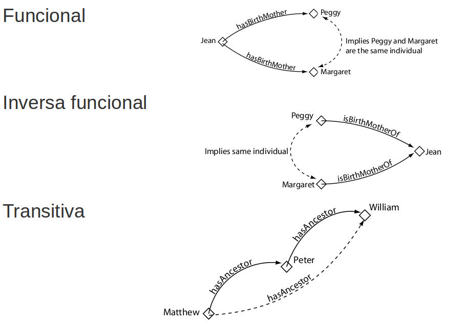
Características propiedades objeto
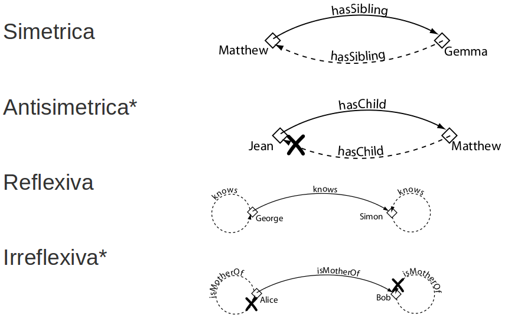
Características propiedades objeto
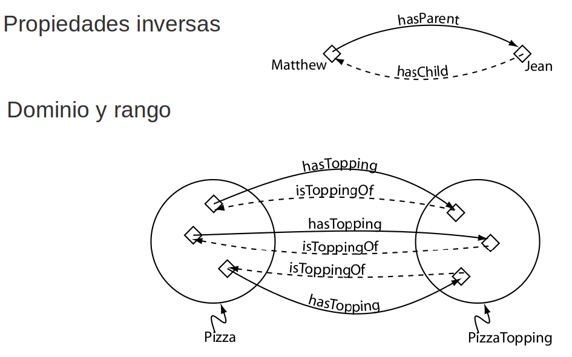
Características propiedades datos
Solo funcional
Dominio clases, rango datatypes
Propiedades anotación
Anotar con lenguaje natural entidades (propiedades, clases, individuos), axiomas, ontologías
Fuera de la semántica
rdfs:label, rdfs:comment, dublin core, a medida
Individuos
Miembro de una o más clases (Types)
Igual (SameAs) o diferente (DifferentFrom) a otro individuo
Relaciones binarias con otros individuos o datos (triples), positivas o negativas
Razonamiento automático
Un razonador infiere los "nuevos" axiomas que implican los axiomas que hemos introducido en la ontología
El razonador infiere todos los axiomas; es útil para tratar con conocimiento complejo
Open World Assumption (OWA)
(Falta de) Unique Name Assumption (¡owl:sameAs!)
Tareas más comunes razonamiento automático
Mantener taxonomía
Consistencia
Clasificar entidades y consultas
Mantener una taxonomía
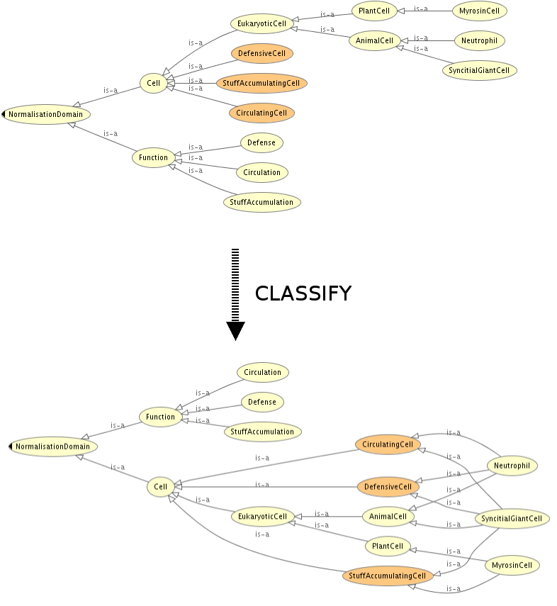
Consistencia
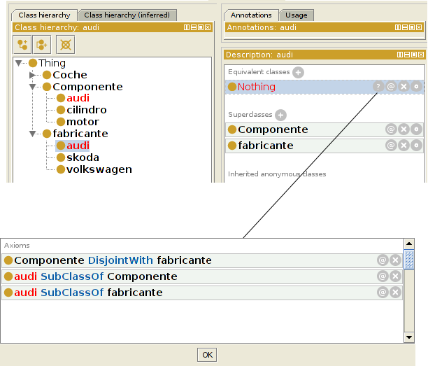
Clasificar entidades, consultas
Clasificar entidades: dada una entidad nueva, como se relaciona con las demas entidades (types, equivalentTo, subClassOf, triples)
Una consulta es una clase anónima que clasificamos contra la ontología como si fuese una entidad
Ejercicios
Ejercicios: owl_assignment.pdf
Soluciones:
{kind=link}
OWL API
http://owlapi.sourceforge.net/
http://github.com/owlcs/owlapi
RDF
RDF (Resource Description Framework)
RDF es un estándar oficial del W3C para representar información en la web
Triple RDF
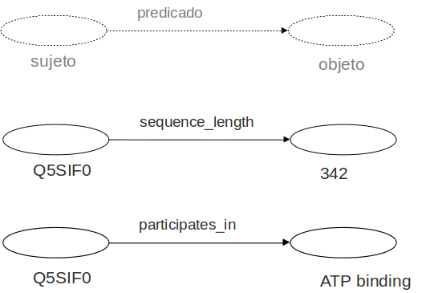
Grafo RDF
Un grafo RDF es un conjunto de triples
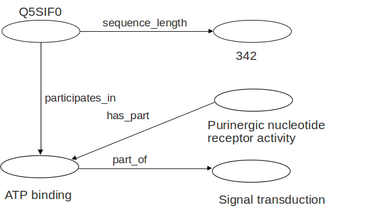
Grafo RDF
Algunos objetos pueden ser valores literales (Cadenas de caracteres)
Sujetos y predicados sólo pueden ser recursos
Los valores literales pueden tener tipo (XML Schema datatypes)
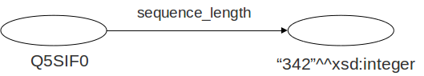
Elementos RDF
rdf:type: agrupar recursos en clases
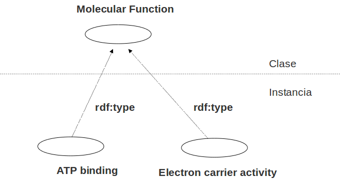
Elementos RDF
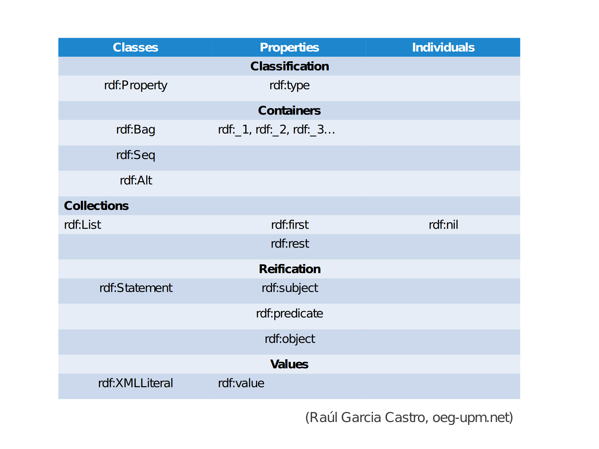
URIs en RDF
Cada recurso (Sujeto, predicado, objeto) tiene una URI
URI: Uniform Resource Identifier (RFC3986)
Espacios de nombres XML
RDF usa espacios de nombres XML mediante "qualified names"
Vocabulario: URIs bajo un espacio de nombre
- rdfs="http://www.w3.org/2000/01/rdf-schema#"
- obo="http://purl.org/obo/owl/GO#"
- owl="http://www.w3.org/2002/07/owl#"
- ...
Serializar RDF
RDF es un modelo para representar datos
Ese modelo abstracto se puede representar con diferentes sintaxis: "Serializar" (escribir) en un archivo
Una de esas sintaxis es RDF/XML
No confundir el modelo con la sintaxis: ¡RDF es mucho más que un archivo XML!
Serializar RDF
- RDF/XML (http://www.w3.org/TR/rdf-syntax-grammar/)
- RDFa (http://www.w3.org/TR/rdfa-core/)
- Turtle (http://www.w3.org/TR/turtle/)
- N3 (http://www.w3.org/DesignIssues/Notation3.html)
- ...
Serializar RDF: RDF/XML
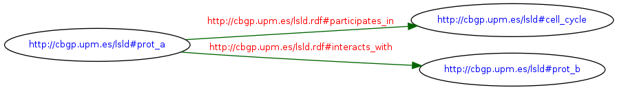
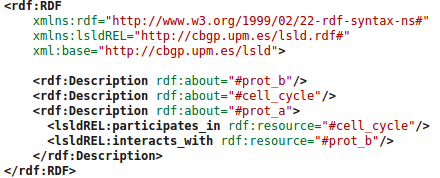
Vocabulario (ontología) / triples
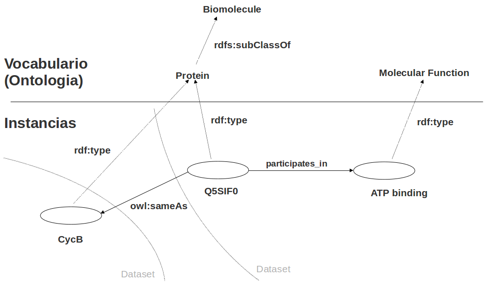
Más información
SPARQL
SPARQL
Lenguaje para hacer consultas sobre grafos RDF (~"El SQL para RDF")
http://www.w3.org/standards/techs/sparql
SPARQL
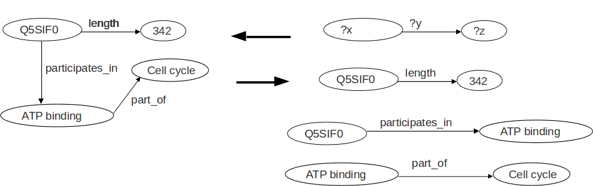
SPARQL
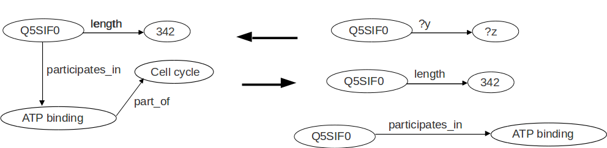
SPARQL
SPARQL (Ejercicios)
Familiarizarse con los datos que vamos que vamos a usar para Linked Data
RDF (raw); copiar y pegar en RDF validator
OWL (raw; bajar y abrir con Protégé
SPARQL (Ejercicios)
Un triple store Stardog en cada puerto: http://biomaster.atica.um.es:8180
Cada alumno tiene un puerto asignado (8181-8193)
SPARQL (Ejercicios)
cd /home/USER/LinkedDataServer/
export STARDOG_HOME=/home/USER/LinkedDataServer/stardog-3.0-home
export PATH=/home/USER/LinkedDataServer/stardog-3.0/bin:$PATH
SPARQL (Ejercicios)
stardog-admin --server snarl://localhost:8180 db create -n um
stardog data add snarl://localhost:8180/um data/data2.rdf data/data.rdf
DataBases; um; query (admin;admin)
DataBases; um; browse (admin;admin)
SPARQL (Ejercicios)
QUERY 1: Obtener todos los triples del dataset
QUERY 2: ¿Que entidad se relaciona con ProtB a traves del predicado codifiedBy?
QUERY 3: ¿Cual es el rdfs:label de ProtB?
QUERY 4: ¿Que instancias pertenecen a la clase Organelle?
SPARQL (Ejercicios)
QUERY 5: ¿Que entidad es parte de algo (part of) y esta codificada (codifiedBy) por un gen?
QUERY 6: ¿En que triples aparece Prot A como sujeto?(*)
QUERY 7: Inferencia. ¿Con que entidades se relaciona Gene B a traves de part of?¿Debería ser parte de Nucleus?
SPARQL (Ejercicios)
QUERY 8: Consultas federadas. Ejemplo Uniprot.
¿Que entidad es owl:sameAs otra entidad de Uniprot que es el sujeto del triple http://purl.uniprot.org/core/classifiedWith http://purl.obolibrary.org/obo/GO_0005890?
Linked Data
Video divulgativo
¿Qué es Linked Data (LD)?
Un método para ofrecer datos directamente en la web
Una propuesta del W3C: http://www.w3.org/standards/semanticweb/data
Un primer paso hacia la Web Semántica
LD utiliza la tecnología ya existente (URI, HTTP, ...) para ofrecer una primera versión de la Web Semántica
Pila tecnologías Web Semántica y LD
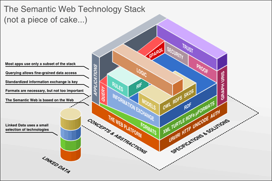
Principios LD
- Usar URIs para identificar entidades
- Usar URIs HTTP para que se pueda acceder a esas entidades
- Cuando un usuario o agente accede a una URI, proveer información útil mediante estándares (RDF, SPARQL)
- Incluir enlaces a otras URIs para que se puedan descubrir más entidades
http://www.w3.org/DesignIssues/LinkedData.html
Con LD publicamos datos de manera ...
... semántica
... enlazada
Semántica
RDF ofrece el triple, un modelo de datos explícito y homogéneo: una "frase" estándar que los ordenadores pueden "entender"
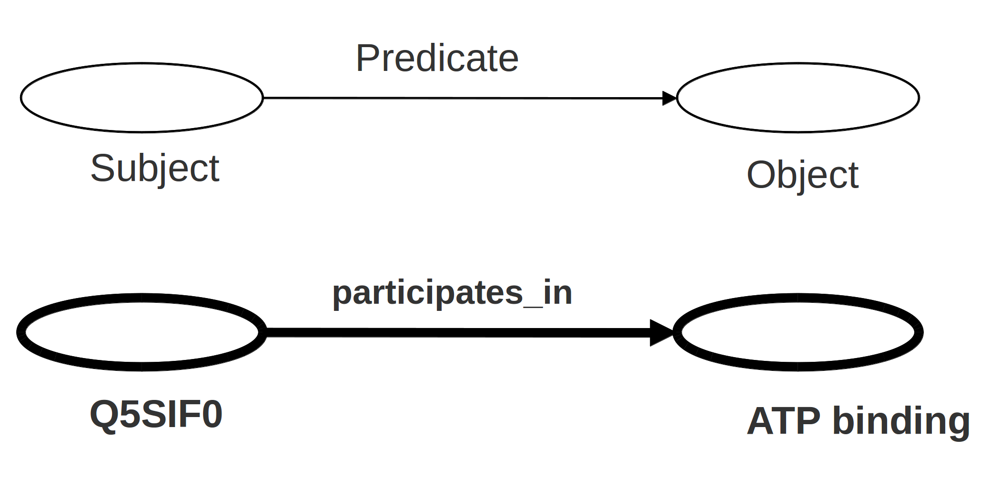
Enlaces
En el triple, cada entidad (sujeto, predicado, objeto) tiene una URI que lo identifica
Los datos son enlazados a otros datos a través de la web, con enlaces explícitos

Red global de datos enlazados
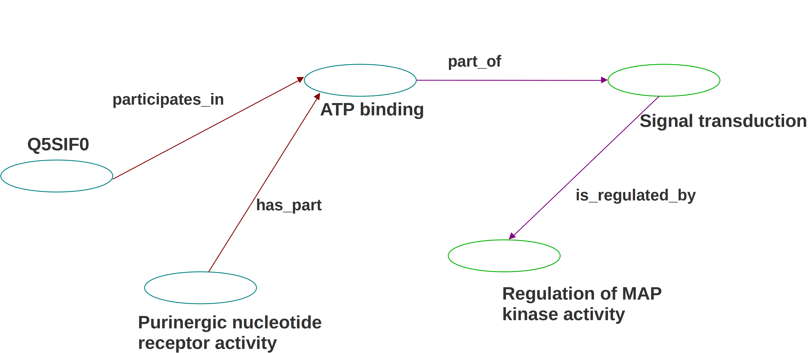
Red global de datos enlazados
Internet de datos, en vez de documentos: "Base de Datos universal":
- Es más fácil construir aplicaciones que exploten los datos, incluyendo razonamiento automático
- Encontramos justo lo que buscamos: consultas directas (SPARQL) en vez de procesar texto
Red global de datos enlazados
Navegamos directamente por las datos (RDF), en vez de navegar a través de documentos que representan esos datos en lenguaje natural (HTML)
Enlazar datos nuevos es tan fácil como enlazar páginas web: crecimiento orgánico de la red
Linked Open Data (LOD) cloud
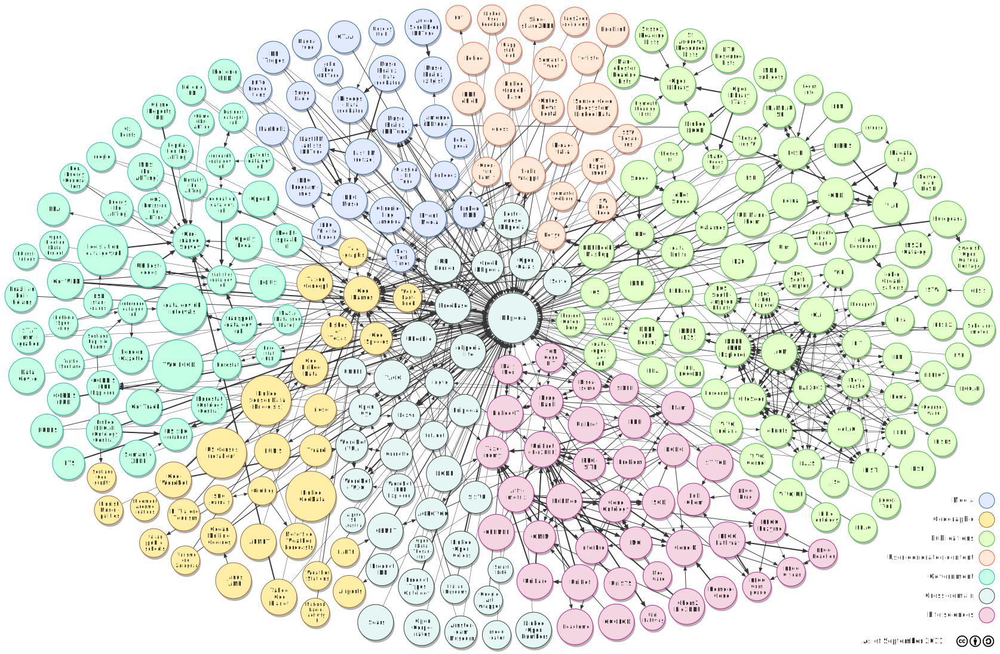
http://richard.cyganiak.de/2007/10/lod/
{kind=link}
Datasets de interés
- Bio2RDF
- OGOLOD (¡UM!)
- LinkedLifeData
- HyQue*
- ArrayExpress and Gene expression atlas*
- UniProt
- LOD cloud ...
Grafos y triple stores
Un "triple store" contiene diferentes grafos
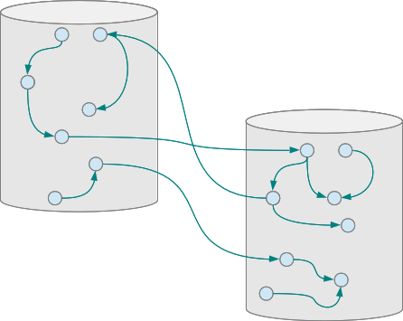
Grafos y triple stores
Solo recibiremos los triples de ese triple store (¡Pero nosotros o nuestro agente automático podemos seguir los enlaces! "Follow your nose")
URIs/URLs en Linked Data
URI identifica a la entidad; URLs identifican (localizan!) diferentes representaciones (RDF, HTML, ...) de la entidad
Descripción de la entidad (RDF, HTML, ...) ≠ entidad
HTTP URIs dereferenciable: cuando se busca una URI, deberia devolver una descripción adecuada del objeto que identifica esa URI
Negociacion contenido
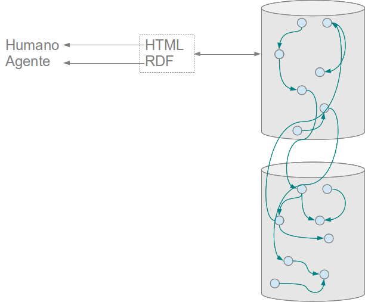
Negociacion contenido
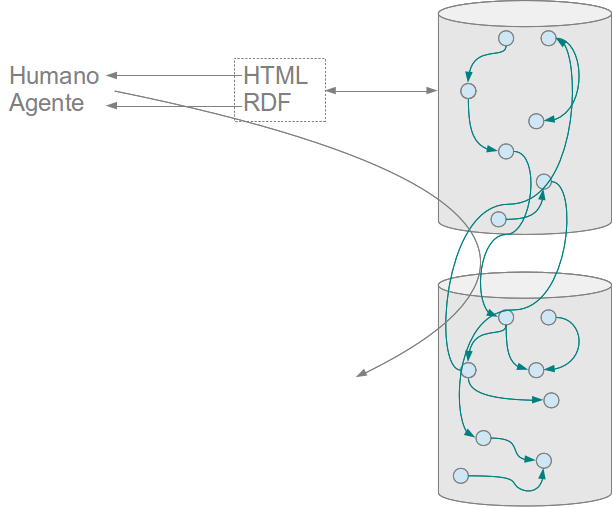
Negociacion contenido
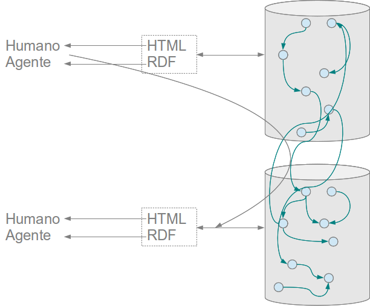
303 URIs vs Hash URIs
Cool URIs for the Semantic Web

303 URIs
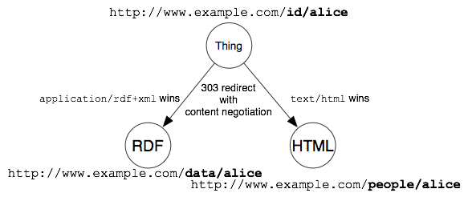
Hash URIs
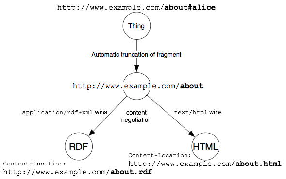
Diseño URIs
- Base URI: http://geo.linkeddata.es/
- TBox URIs:
- http://geo.linkeddata.es/ontology/{concept|property}
- http://geo.linkeddata.es/ontology/Provincia
- ABox URIs:
- http://geo.linkeddata.es/resource/{r. type}/{r. name}
- http://geo.linkeddata.es/resource/Provincia/Madrid
Inferencia en LD
Para producir el dataset: materializar triples y asegurar consistencia
En consultas
Consumir LD
Navegadores LD
Buscadores LD
Aplicaciones (Mash-ups)
- Revyu
- Talis aspire
- NYT
- ...
Publicar datos en LD
¿Por qué publicar datos en LD?
- Enlaces al exterior:
- Publicar solo nuestros datos, referancias al resto, no hay que replicar datos externos:
- Los datos externos se actualizan independientemente, y nuestro dataset va "a remolque" sin esfuerzo
¿Por qué publicar datos en LD?
- Enlaces a nuestro dataset:
- Es facil enlazar a nuestro dataset, ya que usamos HTTP URIs
- Por lo tanto, aumenta la capacidad de nuestro dataset de ser descubierto mediante enlaces
¿Por qué publicar datos en LD?
Semántica: el significado de nuestro datos es explícito y claro, debido a RDF (instancias) + OWL ("esquema"): es fácil crear aplicaciones, incluyendo razonamiento automático (ej. agentes)
Publicar datos en LD

Publicar datos en LD
- Crear el dataset
- Ontología OWL: reusar lo más posible de otras ontologías para interoperabilidad
- Instancias RDF
- Añadir enlaces a otros datasets
- Manualmente o con herramientas como SILK o LIMES
- A nivel de instancias (owl:sameAs, predicados, ...) y a nivel de vocabulario (owl:equivalentClass, ...)
Publicar datos en LD
- Almacenar el dataset en triple store
- Publicar el dataset mediante servidor web
- Registrar el dataset en Data Hub
- Generar archivo voiD (Vocabulary of Interlinked Datasets): http://www.w3.org/TR/void/
- Generar archivo sitemap.xml (con sitemap4RDF) y enviarlo a Semantic Web index (http://sindice.com/) y Google
Publicar datos en LD
Ejercicio práctico: recrear todo el proceso de publicar un dataset Linked Data
Publicar el dataset de ejercicios SPARQL en una infraestructura ya preparada (Linked Data Server)
Linked Data Server
"Pack" ya listo y configurado para publicar Linked Data en localhost (Solo para GNU/Linux)
Linked Data Server
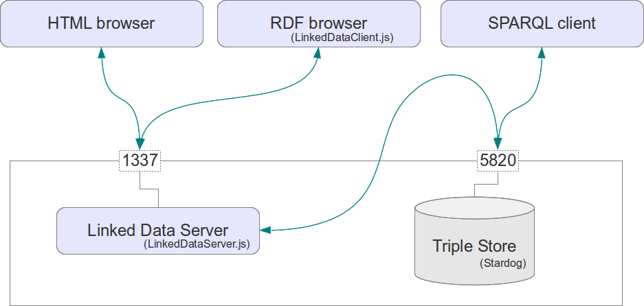
Linked Data Server
Stardog: http://biomaster.atica.um.es:8180
LinkedDataServer.js:
var port=1337;
var endpoint_url = "http://localhost:5820/";
Linked Data Server
nodejs LinkedDataServer.js
http://biomaster.atica.um.es:3030/resource/Prot_B
CONNEG curl cp key to everyone and deploy in some of them (inlcuding mine)
Linked Data Server
Añadir un triple a un entidad externa y publicar en Linked Data server
Crear otro dataset y publicar en Linked Data server
Arreglar alguno de los bugs de LinkedDataServer
Más información
Más información
Linked Data, the story so far (Christian Bizer, Tom Heath, Tim Berners-Lee)
Linked Data: Evolving the Web into a Global Data Space (Christian Bizer, Tom Heath)
Semantic Web Health Care and Life Sciences Interest Group (W3C HCLS IG): Health Care and Life Science (HCLS) Linked Data Guide
Más información
Programming the Semantic Web (O'Reilly)